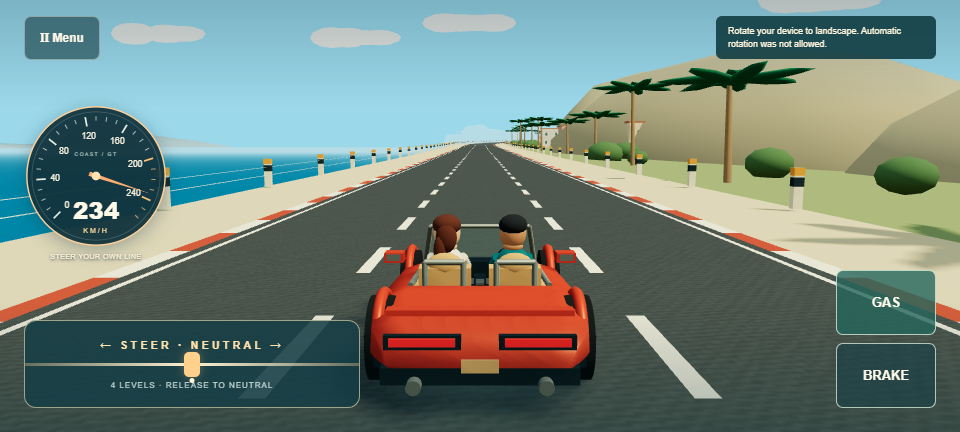
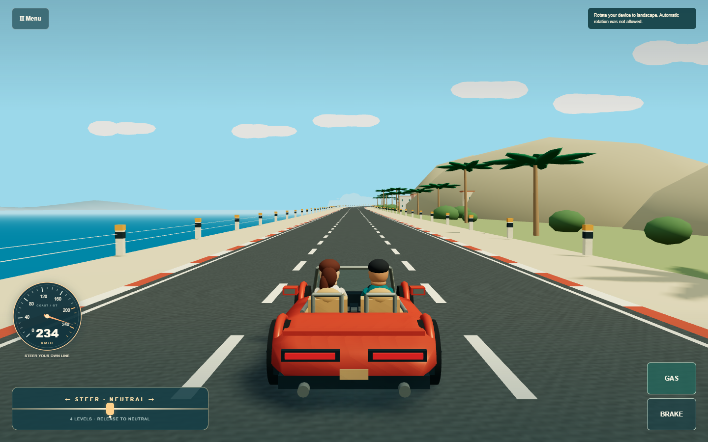
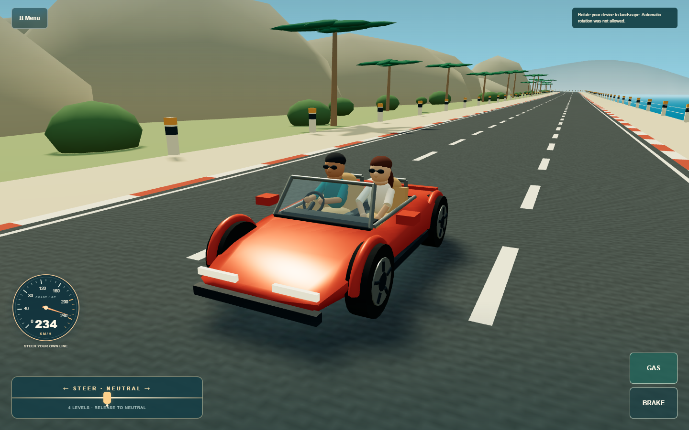
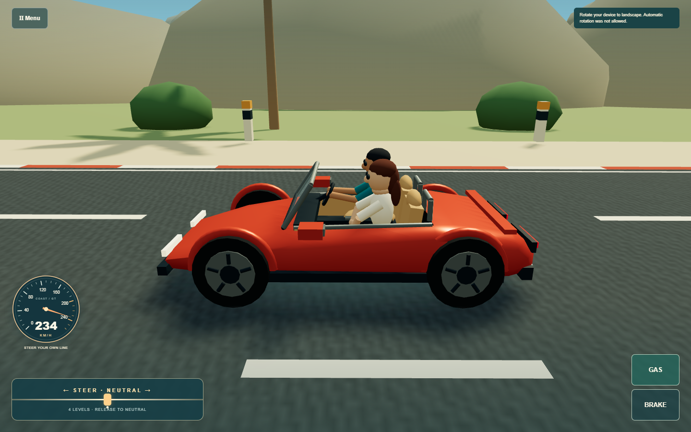
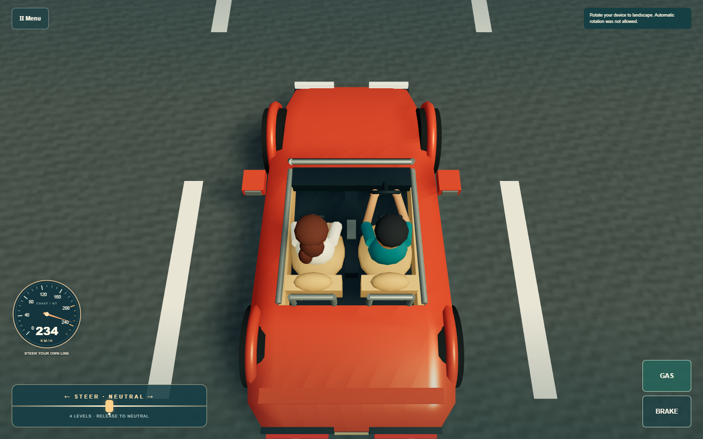
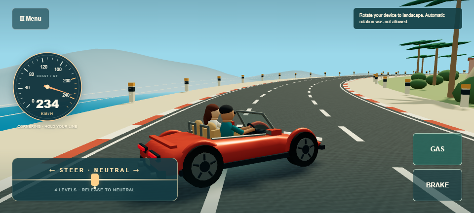
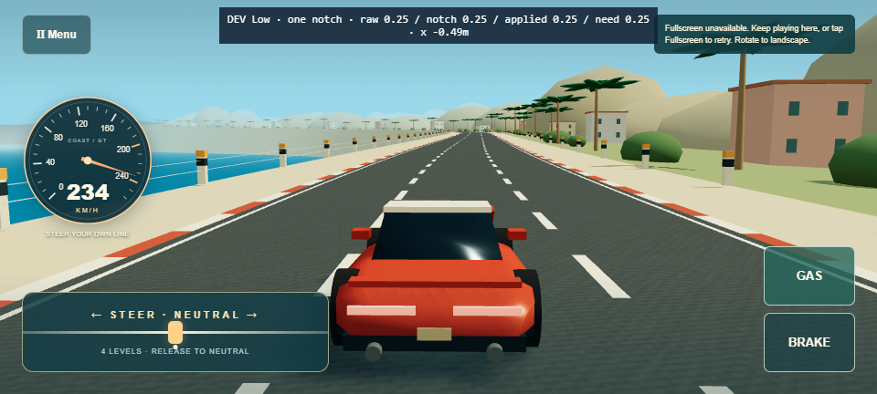
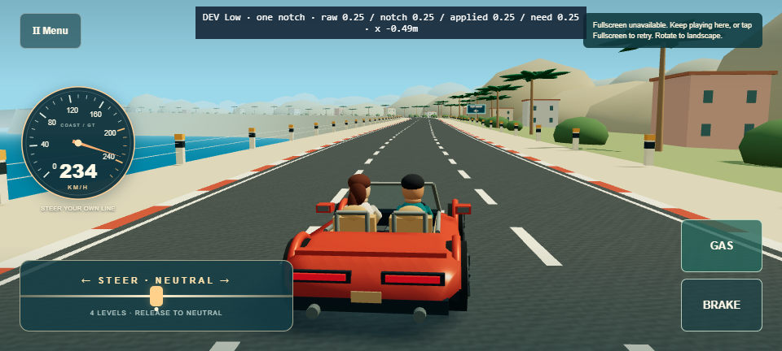

Original open-top roadster, two travelers, earlier gentle pose, dramatic 57° high-load pose, and two full-gas coastal sweepers. Human driving feel and real Pixel performance remain for playtesting. Open game






Trusted touch events drive all challenge clips. Gas stays held throughout both sweepers. Extreme clips start from the same point at 230 km/h; early braking makes the difference. The 125-second continuity clip uses an external test driver. No autopilot exists in ordinary play. Videos are silent.
One-notch matching input at speed: previous pose approximately 0°, new approximately 6°.

